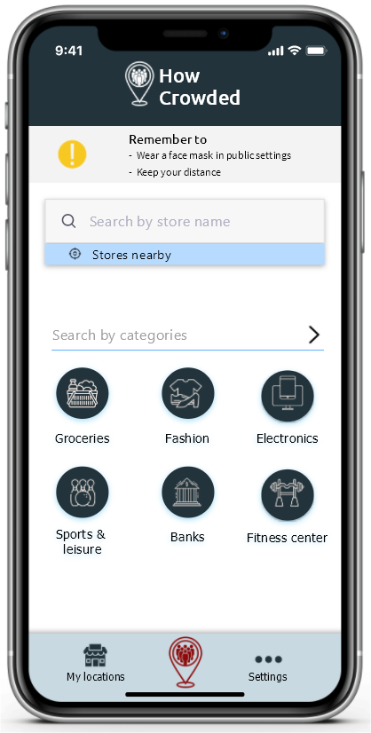

The HowCrowded provides a dual solution for people and organizations to make social distancing a breeze.
Sensors
Sensors are placed at the entrance of the location in order to to register the number of people going in and out
of the location.
This provides real-time information about how many people there are in the location at a given time.
Additionally, the numbers can be used for forecasting.
Signs by the entrance
Organizations and businesses can use a screen by the entrance for monitoring the amount of people at the location.
The screen tells visitors whether it's enough space for them inside.
The screen is either green or red letting the visitor know that it's safe for them to go inside.
It also tells the visitor how many there are currently inside, and the total capacity for the location.


When opening the app, this is the first page you will see.
At this page, you have multiple ways to choose the public place you want
information about.
You could either choose a category, and the app will provide related places, or you could use the search function.
You will also have the possibility to save your favourite and most used locations for future use.

Public place information
If you already know the name of the place that you want to visit, you can use the search function to find the place by typing in the name. When searching for a place, the app will tell you if there are similar places nearby, making it easier choosing a related, less crowded location. The search results forms a list with the total capacity for the locations, as well as the number of people currently at the location. For more information, you can click on a specific location.
Detailed information
When you've chosen a specific place, the app will provide the total capacity
of the place, as well as the number of people there in real time.
You will also be able to see a graph of popular times for the place, in order to plan your trip.
The app will also provide additional information on this page, such as the location address and opening hours.


Add your favourite locations
For quicker access to information, you will be able to save a place, for instance your nearby store, to "My locations". You will get a list over your favourite places with the total capacity and the current number of people. This will contribute in making the user experience seamless. If you want to remove a location from your list, you can do this at any time.